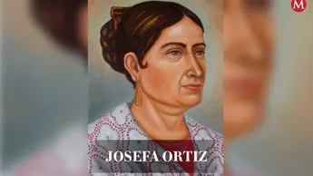
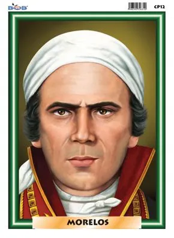
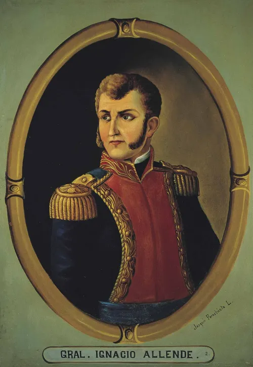
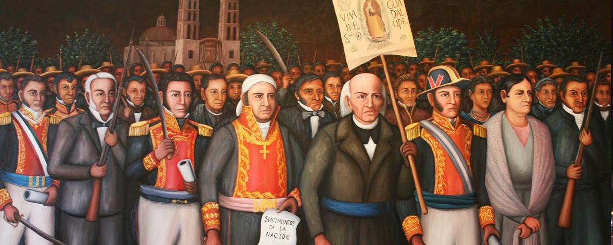
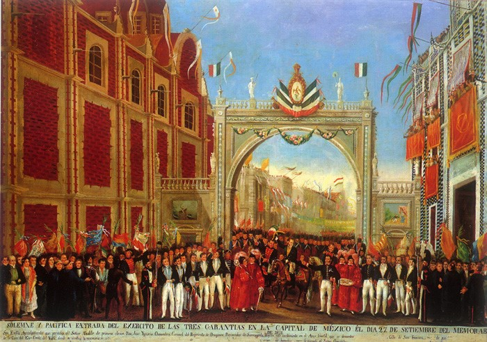
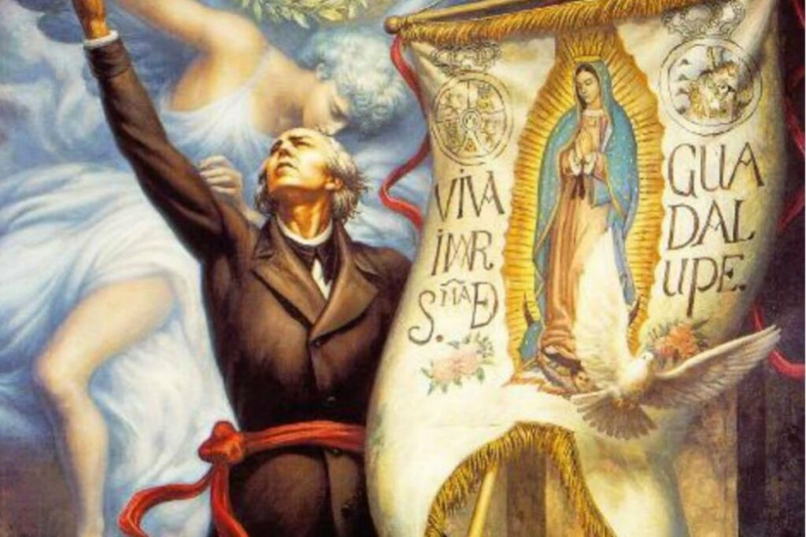
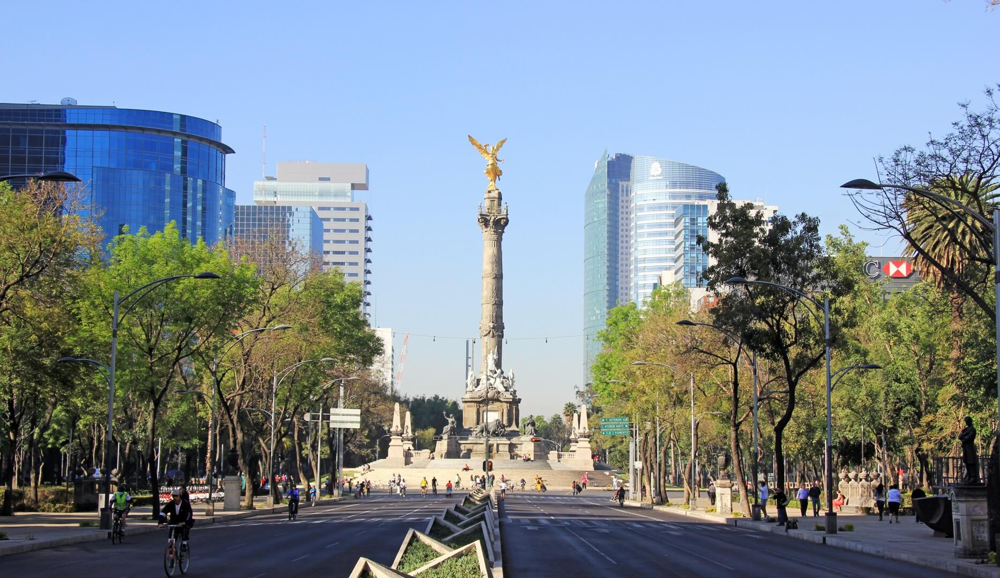

Héroes de la Independencia de México

Miguel Hidalgo y Costilla
Nombrado como el "Padre de la Patria", fue un sacerdote ilustrado, interesado en las ideas de la Ilustración y la situación de pobreza de los indígenas y mestizos. Su figura, más que un lider estratega y militar, fue la de un líder social y un catalizador para la busqueda de cambio y justicia social.

Josefa Ortiz de Domínguez
Conocida como "La Corregidora", fue miembro de la conspiración inicial. Fueron su posición e influencias las que consiguieron llevar a cabo las reuniones y el intercambio de información entre los conspiradores. Una vez ya presa, fue su mensaje el que motivo a Hidalgo y Allende a dar inicio al movimiento de independencia; se le recuerda como un símbolo de participación femenina de este periodo.

José María Morelos y Pavón
Sacerdote y genio militar, Morelos destacó no solo por su liderazgo y múltiples victorias clave en el sur del país, sino que también por su visión de la nación plasmada en el documento "Sentimientos de la Nación", el cual sentó las bases para un México libre como república independiente mediante la separación de poderes, la abolición de la esclavitud y la igualdad social, volviendose más que un soldado, un padre de la nación.

Ignacio Allende
Fungiendo alguna vez como capitán del ejército español, la participación de Allende destacó por su formación e ingenio militar, fungiendo como el estratega maestro en la conspiración de Queretaro y uno de los padres del levantamiento. Su idea de la independencia se basaba en un mayor control encabezado por los criollos y la prioridad en la disciplina militar y estrategica. Su figura representa la faceta militar y estratégica del movimiento.
Historia de la Independencia

El movimiento de Independencia nació el 16 de septiembre de 1810, durante el "Grito de Dolores" en Guanajuato, fueron Miguel Hidalgo, Costilla e Ignacio Allende los que levantaron al pueblo al llamado en armas, siendo acompañados por un ejercito de campesinos y criollos junto a otros líderes más, habían hecho nacer una chispa en la nación, una la cual se vería en apuros al llegar 1811, con la derrota y ejecución de Hidalgo, Allende y otros líderes de la indepedencia.
Posterior a la ejecución de Hidalgo y Allende, llegaría Jose María Morelos como el nuevo general y lider del ejercito insurgente, el cual y a diferencia de Hidalgo, su liderazgo se distinguia por un ingenio y disciplina militar más marcado en el movimiento. Con la llegada de Morelos el movimiento se volvió un ejercito más formal, organizado y disciplinado, consiguiendose numerosas victorias claves en el sur del país y gracias a ello, Morelos convocó el Congreso de Anáhuac para presentar "Sentimientos de la Nación", un documento que funcionaba como proyecto de nación en el que se plantaron las bases para un próximo mandato republicano, plasmando los ideales de Morelos por la repartición de poderes, la abolición de la esclavitud y una mayor igualdad social. Lastimosamente, Morelos sería capturado y ejecutado en 1815.
La muerte de Morelos sentaría un duro golpe en la estructura del movimiento, uno incluso más fuerte que la muerte del propio Hidalgo, pues en este periodo el movimiento se vio fragmentado en diversos grupos guerrilleros luchando por mantener encendida una llama que, una vez más, corría el riesgo de extinguirse. Sin embargo, un símbolo de resistencia durnate esta parte de la lucha fue Vicente Guerrero, quien mantuvó viva la lucha en el sur del país, y quien gracias a su persistencia fue que se pasó a la parte final del conflicto.
Llegando a 1820 llega uno de los últimos personajes destacados de esta lucha, Agustín de Iturbide, quien comandado por las elites criollas y realistas a aceptar la independencia de una vez (esto debido a una nueva constitución liberal que limitaba el poder de estos grupos) decidió abandonar su objetivo de eliminar a la resistencia y en cambio, se reunió con Guerrero en lo que fue el último giro de guión del conflicto. Juntos sellaron el Abrazo de Acatempan y firmaron el Plan de Iguala, proclamando finalmente el cese del conflicto armado y el triunfo del ejercito insurgente. Sería un 27 de septiembre de 1821 que el ahora Ejercito Trigarante, conformado por las fuerzas de los 2 líderes, entraría triunfante a la Ciudad de México y proclamando finalmente el fin de la guerra por la Independencia de México, un conflicto sangriento que durante más de una decada llevó a ambos bandos casi al límite, y que por más veces que la llama de la Independencia parecía apagarse, fue el espiritu mexicano el que la llevaba consigo, ya no solo como un ideal y un deseo de un futuro libre, justo e igual para el mexicano, sino como un recordatorio de que la perseverancia, la valentía, el desafío y la esperanza son parte de nuestra sangre, parte de nuestro suelo y desde entonces, parte de la historia y legado del pueblo mexicano.

Religión

Antes y durante la época de la Independencia, la Religión era un factor clave dentro de la sociedad de ese entonces, sobretodo y especifícamente si hablamos de la religión católica, esto escaló hasta el punto en que dicha religión era uno de los pilares y fuerzas centrales de ese entonces, estando incluida en todo ámbito, político o social, de la época. La Iglesia Católica era la institución más rica y poderosa de aquel entonces, reflejandose esto en la parte española del clero, sobretodo los de alto rango; este hecho irónicamente provocó que aquella parte que no era puramente española, digase los criollos y mestizos, generará un resentimiento ante los privilegios de los españoles y por lo mismo terminaran empatizando con la población mexicana gracias al sentimiento de injusticia, desigualdad y deseo de autonomía del pueblo mexicano. Sería que mediante la autoridad que daba la Iglesia y la fé que tenía el pueblo que Hidalgo y Morelos lograrían llegar al pueblo mexicano e incentivar al mismo a dar el paso para el movimiento de Independencia. Con el fin del conflicto armado la Iglesia seguía consolidada como uno de los factores claves en nuestro pueblo, pues la consumación de la Independencia promulgó a la Iglesia Católica como la única oficial, protegiendo sus intereses y bienes con la reestructuración de la Nación.
Modernidad

Han pasado más de 200 años desde el inicio hasta el final de la lucha por la Independencia de nuestro país y el legado que viene con este conflicto es uno que perdura hoy en día, tal vez el país no este en su mejor momento, pero siendo sinceros hay que agradecer que no nos toco vivir en unas condiciones como las de la Nueva España, donde por el puro hecho de nacer aquí ya eras menos. La sociedad actual no es perfecta y la verdad es que nunca lo seremos, sin embargo doy gracias al sacrificio de nuestros heróes patrios que estoy escribiendo este texto, y que en parte tengo la vida que tengo, porque gracias a la lucha por la Independencia es que tenemos el México de hoy en día, y aunque no sea el ideal, es uno que todavía puede tener al menos una mínima chance de mejorar.